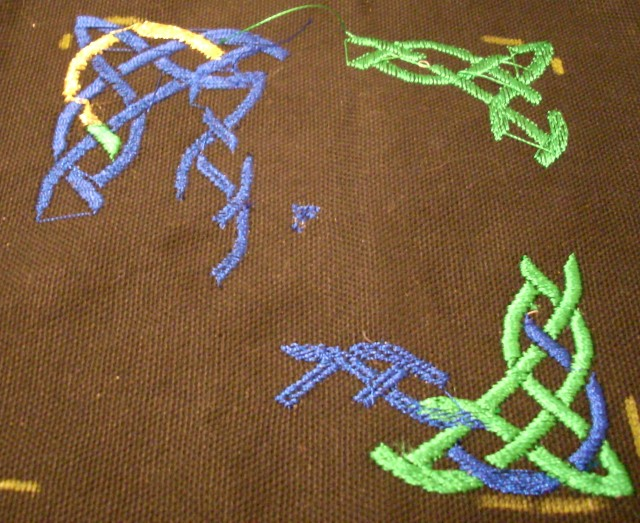
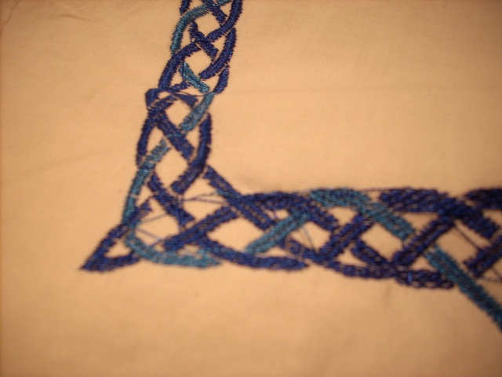

Embroidery output extension for Inkscape
NOTE: This file is part of Jon Howell's original inksape-embroidery project. Much of what is below is outdated, but it is included here for historical purposes.
Inkscape is a natural tool for designing embroidery patterns;
the only challenge is converting the Inkscape design to a stitch file.
Here's a rough cut as such a tool that got me through my first project;
it may work for you, or maybe you can fix a bug or two and make it
more robust for your application.

My very first outputs. Scale is wrong, stitch spacing is wrong.

A better version. Mostly correct, but still shows poor spacing.
Jump stitches all over the place because
the first TSP implementation was very broken.

And now it's working well enough to embroider this shirt!
The most difficult part was carefully lining up the sequential panels
to make the design appear continuous. One tip: baste the working piece down
to a big piece of stabilizer, so that they stay together as the hoop is
repositioned.
Installation.
Download the distribution from here.
Install shapely, Python bindings to the GEOS library.
apt-get install python-shapely
Place or link embroider.{inx,py} into ${HOME}/.config/inkscape/extensions.
Usage.
Create a drawing in Inkscape made of filled regions.
Select the regions you want to export as a stitch file.
Ungroup repeatedly until there are no groups left,
and convert objects to paths.
(Embroider doesn't know how to handle text or rectangle objects;
they must be converted down to paths before it can work with them.
I don't know how to call "back into" Inkscape to do this automatically.)
Select the Embroider filter.
If it works (and it very well might!), you'll get a new grouped object
showing the proposed stitching path. It may be easy to miss, since the
new strokes appear in the same color as the underlying fill. (If you
forgot the "ungroup" step, it may also appear at a random place on
your canvas; see BUGS below.)
As a side effect, Embroider also creates a file in Inkscape's current
directory called embroider-output.exp.
If you like the stitch pattern you see, then open that output file
in a converter program and save it to the appropriate format for
your machine.
(I use Wilcom's TrueSizer, available as free-as-in-beerware,
inside WINE to convert my output to Brother .PES format.)
Theory of operation.
For each input path,
if the path is closed & filled,
we fill it with rows of stitches.
That's done by finding the path's bounding box,
deciding whether to use horizontal or vertical rows based on the long
axis of the region,
drawing a bunch of equally-spaced line segments across the bounding box,
and finding the intersection of the row lines with the path region.
(We import shapely to do the intersection computation.)
Each path generates a "patch" of stitching.
We sort all the patches by color, to minimize thread changes.
Then we use a Traveling Salesman Problem implementation
(a cheesy, greedy one, plus a little hill-climbing at the end)
to sort the patches to minimize the length of the jump stitches
(the unintended stitches between patches).
updates
2012.10.19 Implemented stroke stitches. Strokes <= 0.5pt are rendered
as straight lines, following the Inkscape path, obeying the max_stitch_len
parameter.
Strokes wider than 0.5pt are drawn with a zig-zag stitch. It's a bit
ugly around corners and sharp curves, leaving gaps at the outside edge,
but come on, I wrote it in like 45 minutes. [An ideal algorithm would
compute the boundary of the stroke correctly, and then come up with a nice
way to fill it with the zig-zag. This one isn't ideal.]
You can use strokes to do applique embroidery. Draw a (not-too-complicated)
closed curve. Generate it both as a 0.5pt line and again with a wider stroke
width, like 3mm. Stack two fabrics in the hoop, and embroider the thin path.
Remove the hoop from the machine (but leave the fabrics in the hoop).
Carefully trim away the top fabric at the stitched boundary. Then replace
the hoop and embroider the wide path. The wider path will cover the first
stitch line and secure the applique'd piece.
Tips on strokes: use Extensions -> Modify Path -> Flatten Beziers
to change curves down to linear approximations. (The Embroider
extension's supposed to do this, but it's not so good at it.)

More tips on using Inkscape to get from a raster example to an embroidery file.
TODOs.
TODO: when a single patch is split into multiple sections (because
of concavities), two problems occur:
First, the sections are treated
as one big patch with an implicit jump. It would be better to make
them separate patches so that TSP can do a better job planning to
minimize jumps.
Second, the algorithm "assumes" that all the stitches
in the left "column" are part of the same patch, so it will also incur
horizontal implied jump stitches because it doesn't realize that the
rows are from disjoint parts of the underlying region. A smarter algorithm
would break each time the number-of-segments changes, and start a new
patch each time, again relying on TSP to put them back together in a
sane order.
TODO: when a row is longer than the max stitch length, use a global-phase
("tajima") stitch, rather than phase relative to where the row starts,
to avoid troughs in the middle of the filled region.
TODO: remove small stitches. TrueSizer uses a 0.5mm threshhold.
TODO: implement melco jump-stitch, so jumps don't put holes in the fabric.
done: sort compound paths biggest-area first, to at least get holes right.
BUGS: shapely thinks all compound paths are holes; it doesn't understand
the even-odd rule.
BUGS: Can't handle the "transform=" property that inkscape loves to
glue onto <g>roups. To work around this, ungroup all the way down to
separate <path>s, # which applies all the transforms down to the path
point level, then regroup as desired.
TODO: Call into Inkscape to do this behind the scenes.
TODO: Call into Inkscape to convert objects to paths automatically.
LICENSE
This code is copyright 2010 by Jon Howell,
licensed under GPLv3.
AUTHOR
Written by Jon Howell, jonh@jonh.net.
If you email me, expect an initial bounce with instructions to pass the
spam filter.